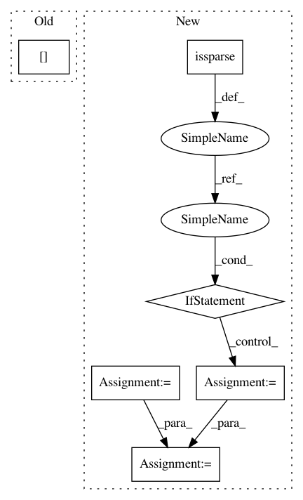

f5122cdab53605b7b800c96d6700b791b8c9add8,librosa/segment.py,,lag_to_recurrence,#Any#Any#,287
Before Change
idx_slice = [slice(None)] * lag.ndim
for i in range(1, t):
idx_slice[axis] = i
lag[idx_slice] = np.roll(lag[idx_slice], i)
sub_slice = [slice(None)] * lag.ndim
sub_slice[1 - axis] = slice(t)
After Change
// Since lag must be 2-dimensional, abs(axis) = axis
t = lag.shape[axis]
sparse = scipy.sparse.issparse(lag)
if sparse:
rec = scipy.sparse.lil_matrix(lag)
roll_ax = 1 - axis
else:
rec = lag.copy()
roll_ax = None
idx_slice = [slice(None)] * lag.ndim
for i in range(1, t):
idx_slice[axis] = i
rec[tuple(idx_slice)] = util.roll_sparse(lag[tuple(idx_slice)], i, axis=roll_ax)
sub_slice = [slice(None)] * rec.ndim
sub_slice[1 - axis] = slice(t)
rec = rec[tuple(sub_slice)]
In pattern: SUPERPATTERN
Frequency: 3
Non-data size: 6
Instances
Project Name: librosa/librosa
Commit Name: f5122cdab53605b7b800c96d6700b791b8c9add8
Time: 2016-04-26
Author: brian.mcfee@nyu.edu
File Name: librosa/segment.py
Class Name:
Method Name: lag_to_recurrence
Project Name: biolab/orange3
Commit Name: b6a4b26ea39c634adfc46b064375f4af30b7e7a3
Time: 2014-12-19
Author: niko.colneric@gmail.com
File Name: Orange/distance/__init__.py
Class Name: Jaccard
Method Name: __call__
Project Name: theislab/scanpy
Commit Name: 14124ebc79621009018907a2f0564b52b557ba92
Time: 2018-12-09
Author: f.alex.wolf@gmx.de
File Name: scanpy/tools/score_genes.py
Class Name:
Method Name: score_genes
Project Name: librosa/librosa
Commit Name: f5122cdab53605b7b800c96d6700b791b8c9add8
Time: 2016-04-26
Author: brian.mcfee@nyu.edu
File Name: librosa/segment.py
Class Name:
Method Name: lag_to_recurrence